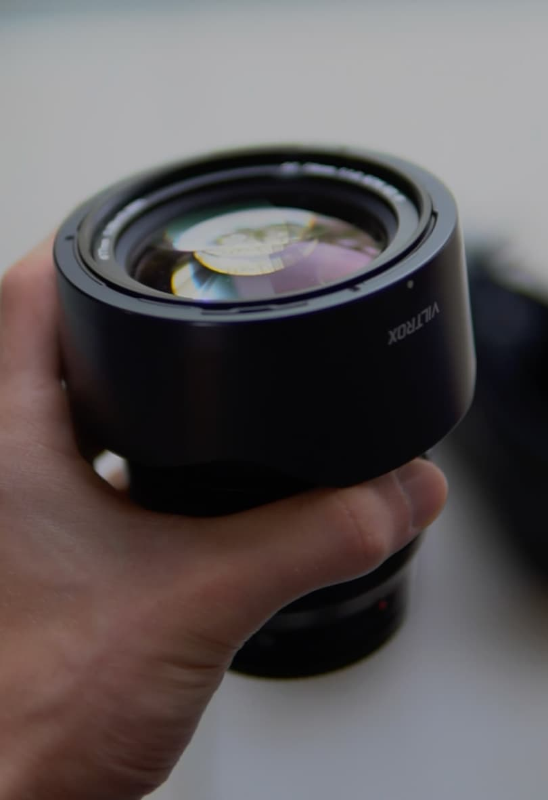
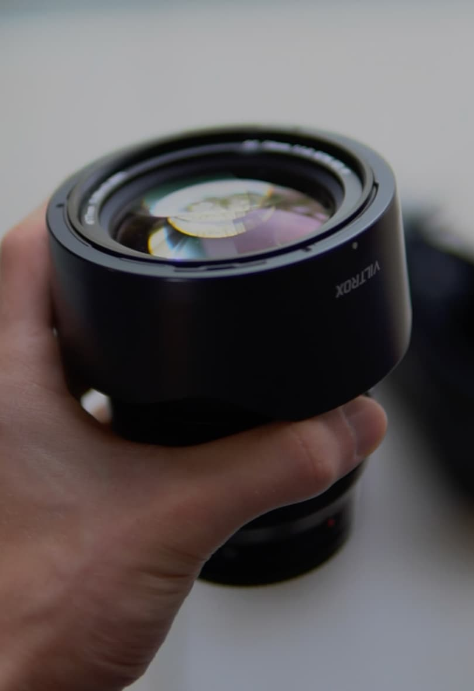

Gear
 

Camera Body
The Sony A7III is a highly acclaimed mirrorless camera known for its exceptional performance in various shooting conditions. With a 24.2-megapixel full-frame sensor, 693-point autofocus system, and 4K video capabilities, the A7III offers impressive image quality and versatility. Its robust build, excellent low-light performance, and advanced features make it a popular choice among both professional photographers and enthusiasts.
Camera Lens
The Viltrox 75mm f/1.2 AF Lens is a prime lens designed for mirrorless cameras, known for its impressive combination of a wide f/1.2 aperture and autofocus capabilities. This lens is valued for its ability to produce stunning bokeh and achieve excellent low-light performance. With a 75mm focal length, it is suitable for portrait photography, providing a flattering perspective and beautiful background blur. The Viltrox 75mm f/1.2 AF Lens caters to photographers seeking a versatile and high-quality lens for creative and professional purposes.